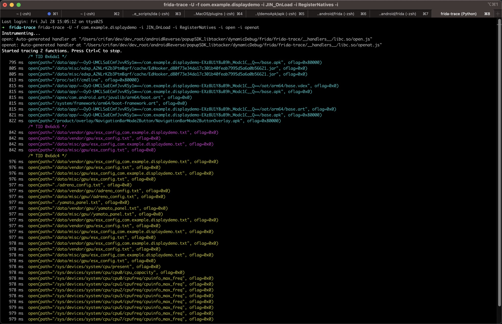

Frida调试安卓app
用frida或frida-trace等工具去调试安卓应用：
找到安卓应用的包名或PID
frida-ps -Uai
找到此处的要调试的应用：
- 19384 DisplayDemo com.example.displaydemo
- =>
- app名：DisplayDemo
- 包名：com.example.displaydemo
- PID：19384
- =>
用frida或frida-trace去调试
此处手动点击DisplayDemo这个app，确保在前台运行，然后去hook调试：
- frida
frida -U -F com.example.displaydemo- 效果
- 效果
- frida-trace
frida-trace -U -F com.example.displaydemo -i open frida-trace -U -f com.example.displaydemo -i JIN_OnLoad -i RegisterNatives -i open -i openat- 效果

- 
- 效果